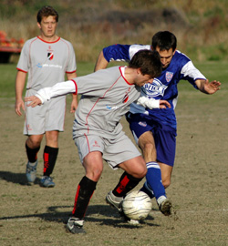
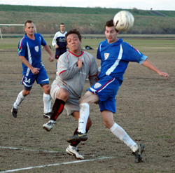
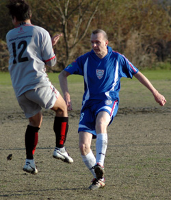

|
Misato, Sun 3rd Dec. Victory in a hard-fought and competitive game against Barbarians FC took the Vags to the giddy heights of the Division 2 table.
On a pitch bathed in Arctic sunshine both teams played hard from the off, the Vags plan to get in early thwarted by equal determination from the Barbarians and the ice rink qualities of the pitch. After some early pressure, the Vags defence settled down and started to take control, blunting the opposition attacks and getting some nice balls down the wings, on the deck and to feet, a nice addition to play this season!
The midfield picked up the mantle with Mark and Pabs marauding down the wings and some equally passionate play from Wayne and Ian taking control of the midfield. Despite the pressure, Vags were unable to score, held back by an inspired display from the Barbarians keeper, who played a blinder all day.
Inevitably, after a succession of corners the breakthrough came midway through the half from a corner as Ian rose quicker than a dogs back leg to nod the ball over the line. More pressure from the restart and the ball stayed in the Barbarians half for long stretches as the Vags pushed hard in midfield, pumping balls back down the field for Simon and James to latch onto. The half ended with a nice move; a goal kick nodded down by Ged, a through ball from Chris to Mark, who skinned his marker and fed to James who blasted over on the turn.
1-0 at half time and the Vags charged out for the second half intent on getting more. However, despite the pressure, they failed to capitalize on the opportunities. Some strong runs from Tom, playing an inspired game on the right, creating more opportunities.
Even Ged got in on the action, crossing the halfway line for the first time this millennium and cutting up field before being forced back by a determined Barbarian defender in the sandpit area of the pitch.
The introduction of Maz gave us a well needed fillip and he followed up well from a woodwork rattling effort from Simon, but still no more goals. The dying quarter of the game produced a spirited a fight back from the Barbarians, giving the Vags a couple of scares. Taylor getting across his goalmouth for a fine fingertip save and Phil getting in a great reaction header to clear off the goal line, rounding off another solid performance and adding one last victory to his Japan footy Palmares in his swansong game.
1-0 when the fat lady sang and credit to both teams for a fair fought encounter. Here‚s to next week where we pick up again for a cup encounter in the Oifuto dirt bowl.
Report by Chris Southam
|